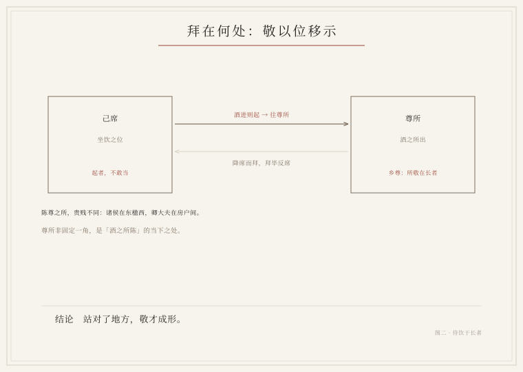

曲礼上 · 一·七十五 · 第 73 课
陪长辈饮酒：酒送到面前就起身，走到陈尊之处拜受。注说这是「降席拜受，敬也」，又说「燕饮之礼乡尊」——敬的方向对着尊长。
说什么事：侍饮于长者，酒进则起，拜受于尊所。
落在哪一层：仪。上节讲食之终，此节转入饮。
为何编在此位：疏「食竟宜饮酒，故次之」。一餐既毕，乃有饮；饮之礼另起一段。
【经】侍飲於長者，酒進則起，拜受於尊所。
【注】降席拜受，敬也。燕飲之禮鄉尊。
侍饮于长者 疏：「明侍尊长饮酒法也。」
酒进则起 疏：「谓长者赐侍者酒，进至侍者前则起。侍者见酒至，不敢即饮，故起也。」
拜受于尊所 疏：「尊者，以陈尊之处也。侍者起而往尊处拜受之也。」
降席拜受 注四字写其形：离席而下，就尊所再拜。
乡尊 注「燕饮之礼乡尊」。乡，向也。疏引何胤：「尊者，主人也。拜者，在尊所对主人也。降席下奠爵，再拜稽首。」又引崔灵恩：「卿大夫燕饮，主人面亦乡尊。」
陈尊之所，贵贱不同 疏：诸侯燕礼、大射，尊在东楹之西；乡饮酒及卿大夫燕，尊陈于房户之间。故拜必「于尊所」，非泛拜。
近尊乡长者 疏：「近尊乡长者，故往于尊所乡长者而拜。」
陪长辈饮酒时，酒送到面前就起身，走到陈尊之处拜而受之。
一节两句，讲的是「拜在何处」。受赐之拜不在自己席上，而在尊所——那里是酒之所出，也是长者所向。礼把敬落在位置上：站对了地方，敬才成形。
第一层 酒进则起 长者赐酒，进至侍者之前，侍者即起。所起的不是身，是「不敢当」：赐已及己，己不能安然坐受。
第二层 拜于尊所 为何不在席上拜？疏说「近尊乡长者」。尊是酒之所自出，长者所向亦在此；往尊所而拜，是把敬还给「所出」之处。
第三层 降席 注「降席拜受」。席是己之位，尊所是长者之位。离己位而就尊位，是礼的空间语法：敬以位移表示。
第四层 陈尊之所因贵贱而异 疏辨诸侯与卿大夫陈尊之地不同。可见「尊所」不是一个固定的角落，是「酒之所陈」的那个当下之处。礼随境而定位，不预设坐标。
与今日何干 今人受长辈斟酒，起身、双手接、杯沿低于对方——即此三义的今形：起是「不敢当」，双手是「拜」，低杯是「乡尊」。
| 左 | 右 |
|---|---|
| 侍饮于长者 | 侍尊长饮酒之法 |
| 酒进则起 | 酒至己前即起，不敢即饮 |
| 拜受于尊所 | 往陈尊之处而拜受 |
| 降席拜受 | 离己席，就尊位，敬以位移示 |
| 乡尊 | 所敬在长者；酒为所出 |
| 陈尊之所 | 诸侯在东楹西，卿大夫在房户间 |
画堂上一角：左为一只陈尊（酒器，尊面有鼻朝内），尊旁地上有一处席边（席角微起，示曾降席）；右为一只小爵置于席面，爵中酒满、未动。席与尊之间一段地面被踩得略亮。不画人、不写文字。赭色只在尊鼻与爵流。
